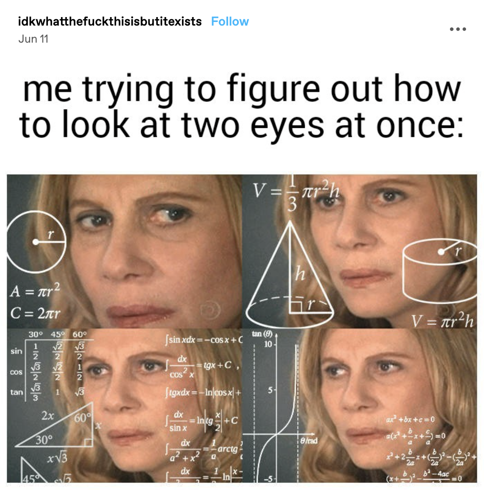
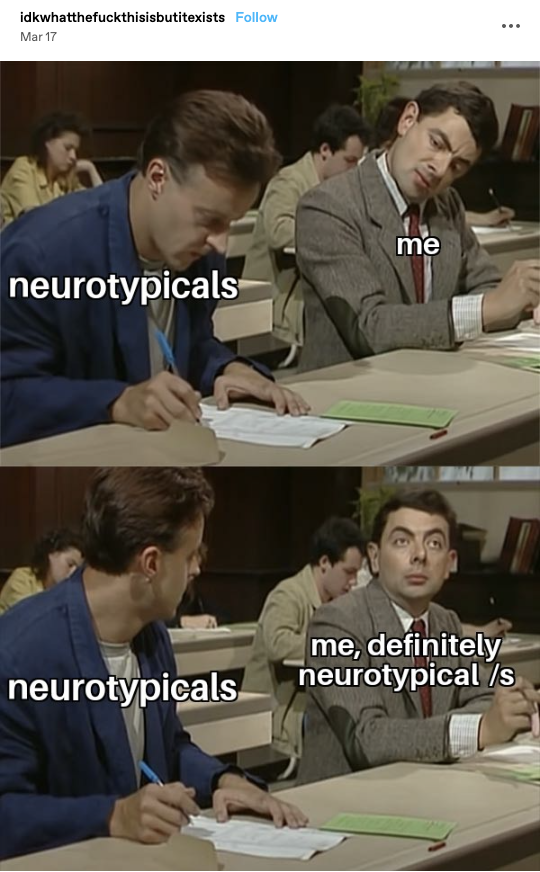
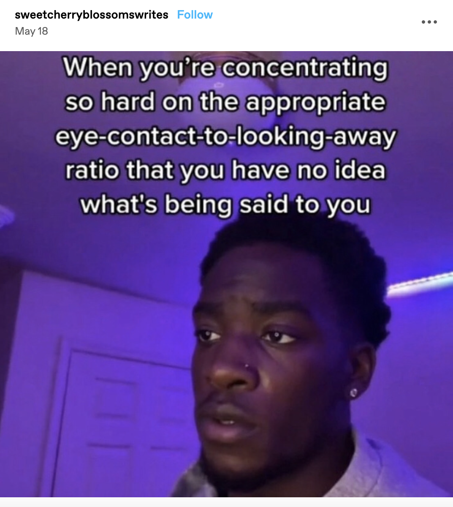
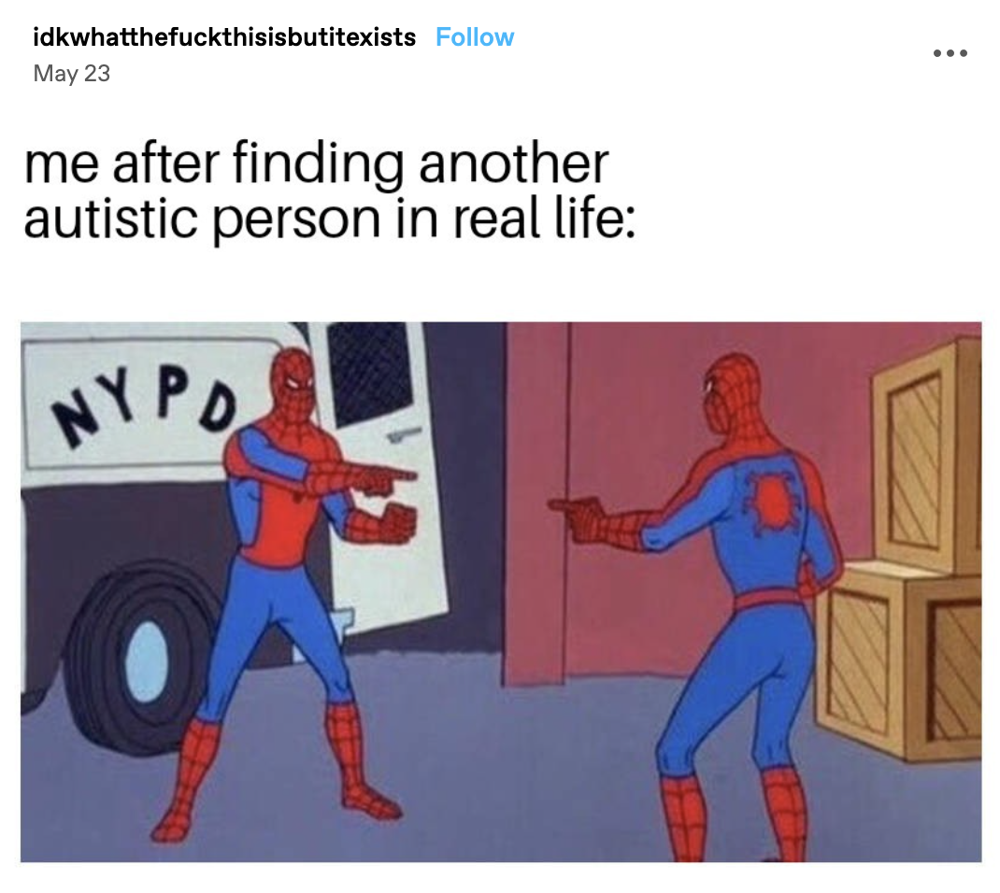
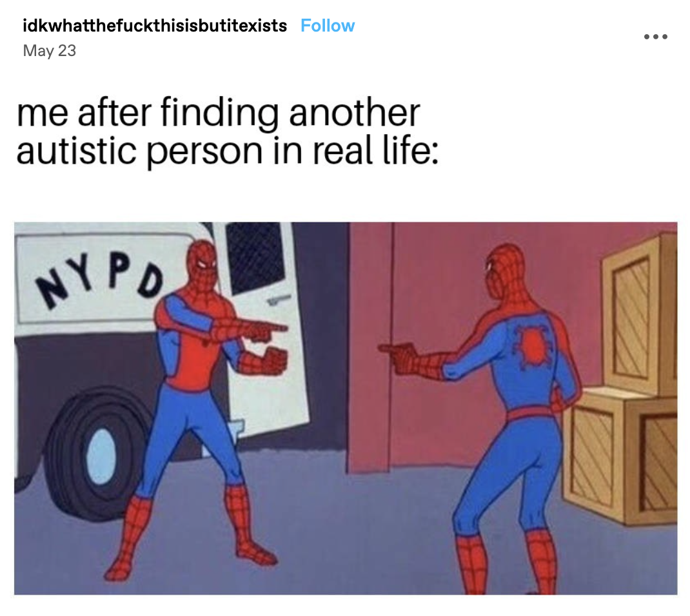
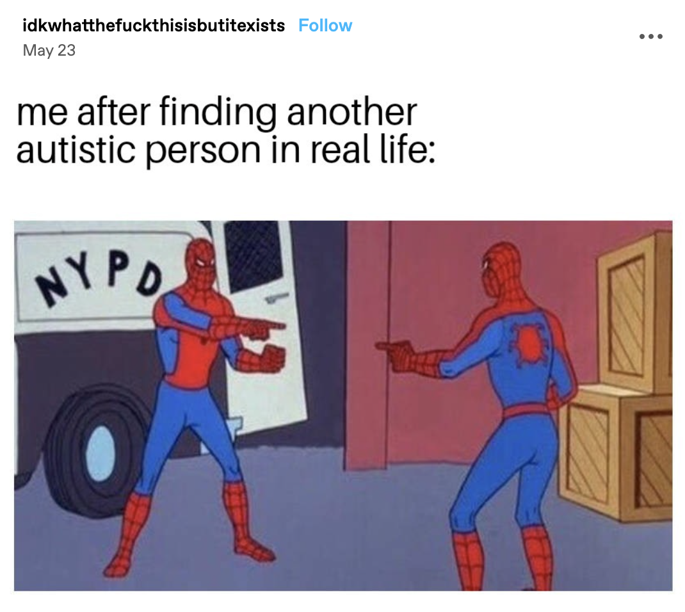

Google Form
If you'd like to rant about anything, ask me questions, give feedback, learn more, etc., then feel free to fill out this form at any time!

Memes that I relate to as an autistic person



 

